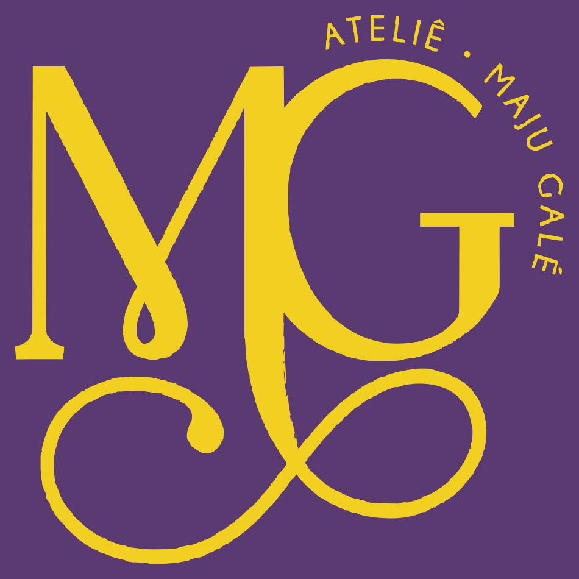

Sobre

Eu sou uma mulher que, desde a infância, sempre me encantei pela área da beleza. Minha primeira paixão foi pela maquiagem, e passava horas aprendendo com os vídeos do YouTube. Em 2017, tomei coragem e iniciei vários cursos de maquiagem para me tornar a profissional que sou hoje! No entanto, a maquiagem foi apenas a porta de entrada para esse mundo. Em 2018, decidi dar um plus na minha carreira com o alongamento de unha, o que me permitiria sair do comércio e viver um sonho mais à frente. Por um tempo, permaneci trabalhando para o comércio, encaixando as clientes que chegavam conforme era possível.
Mas em 2019, a demanda aumentou, e quando me vi dispensando clientes, percebi que era o momento de mudar o jogo. Sempre busquei me aperfeiçoar cada vez mais, com ânsia de aprender. Iniciei no curso de estética, onde me apaixonei ainda mais pela área, sempre me especializando e procurando novidades para entregar sempre o melhor para cada pessoa que passa por mim. Meu objetivo é elevar a autoestima de cada pessoa dentro de sua singularidade. É isso que faz os olhos delas brilharem.